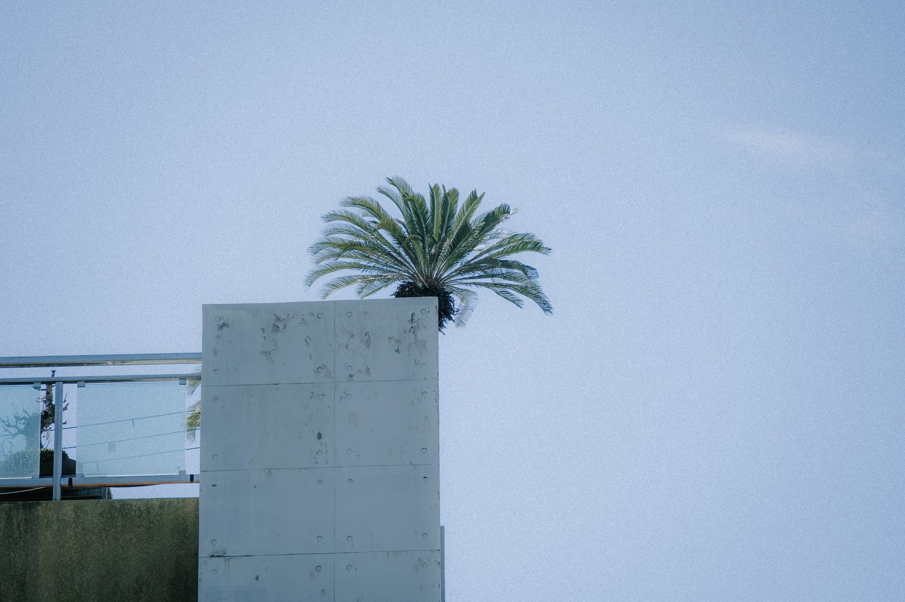

Решения для апартаментов, локальных заведений и вилл в Эль-Альбир
Эль-Альбир требует повышенного стандарта уборки благодаря современной архитектуре и близости к морю.
Террасы и стеклянные балконы
Мы специалисты по мойке стеклянных ограждений и остекления, удаляя следы морской соли, чтобы ничто не мешало вашему виду на Сьерра-Элада.
Общепит и магазины
Обслуживаем рестораны и магазины на Бульваре де лос Музикос и в пляжной зоне, с гибким графиком, не мешающим вашей коммерческой деятельности.
Частные виллы
Техническая мойка больших панорамных окон и зенитных фонарей в самых тихих жилых зонах Альфаса.

Сервис, основанный на надёжности и качестве
Альфас-дель-Пи — мультикультурный муниципалитет, в котором профессионализм ценится превыше всего. Наш сервис мойки окон выделяется:
Чёткая коммуникация
Понимаем, что вам нужно, и выполняем обещанное.
Проверенный персонал
Униформированные, деликатные и высококвалифицированные специалисты, уважающие частную жизнь вашего дома.
Технология чистой воды
Идеально для больших стеклянных поверхностей шале Альфаса, гарантируя идеальное высыхание без минеральных следов.
Почему выбирают нас в Альфас-дель-Пи?
Мы не просто моем стёкла — мы защищаем стоимость вашей недвижимости. Солнце и известковая вода в Альфасе могут необратимо повредить стёкла, если их не обработать правильно. Наш опыт позволяет нам подбирать подходящие средства для каждого типа рамы (ПВХ, алюминий или дерево) и каждого вида стекла.
+35 лет прозрачности в самом сердце Марина-Байша
Мы приезжаем во все урбанизации Альфаса
Покрываем весь муниципалитет: от Старого города Альфаса до зон Фоя, Эскандинавия, Жардин-де-Альфас, Бельмонте и, конечно, всё побережье Эль-Альбира.
Частые вопросы наших клиентов в Альфасе
Выполняете ли вы ежемесячное обслуживание?
Да, это наш самый востребованный сервис в Эль-Альбире. Мы планируем периодические визиты, чтобы вам никогда не приходилось беспокоиться о состоянии ваших окон.
Можете ли вы мыть труднодоступные стёкла на двухъярусных виллах?
У нас есть штанги из углеволокна и подъёмные системы, чтобы добраться до любого стекла, каким бы высоким или труднодоступным оно ни было, с максимальной безопасностью.
Подарите своим окнам уход, которого они заслуживают
Доверьтесь опыту Luz de Luna, и ваши окна снова засияют. Свяжитесь с нами и узнайте, почему мы уже три десятилетия остаёмся лидерами в этом районе.
We speak English